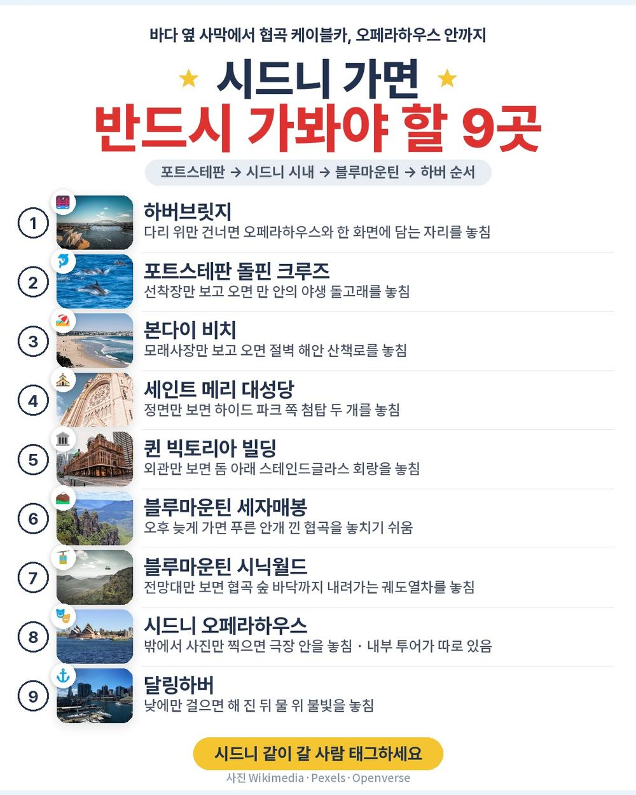
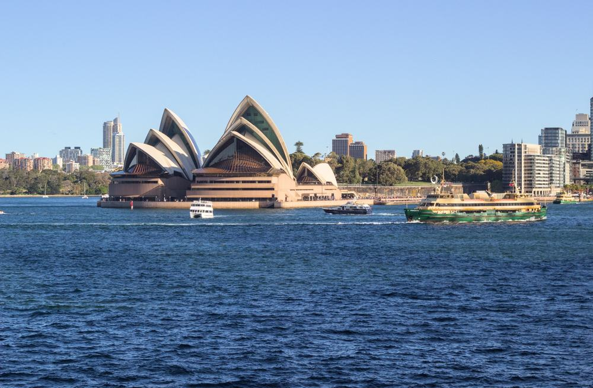
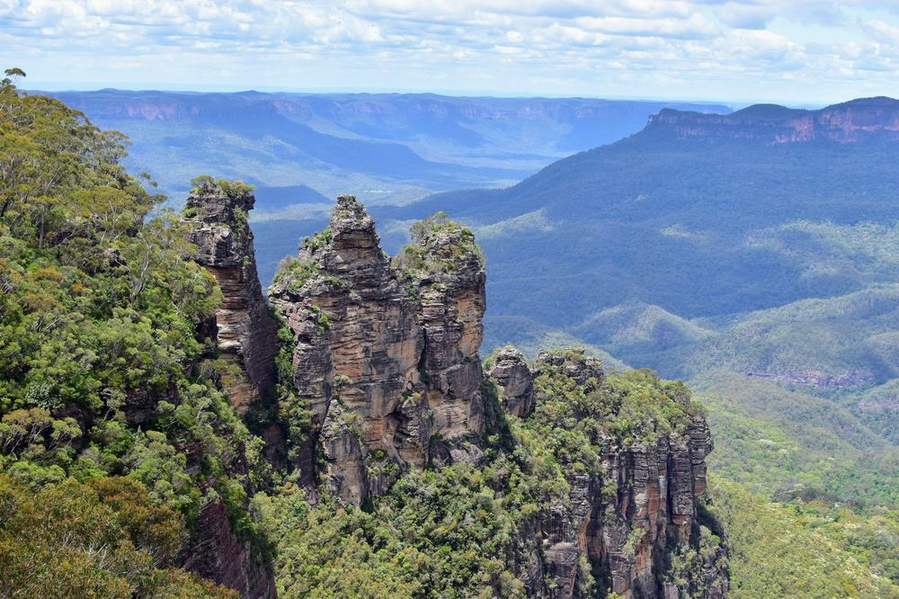
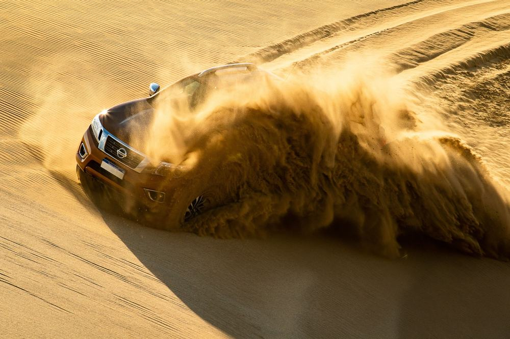
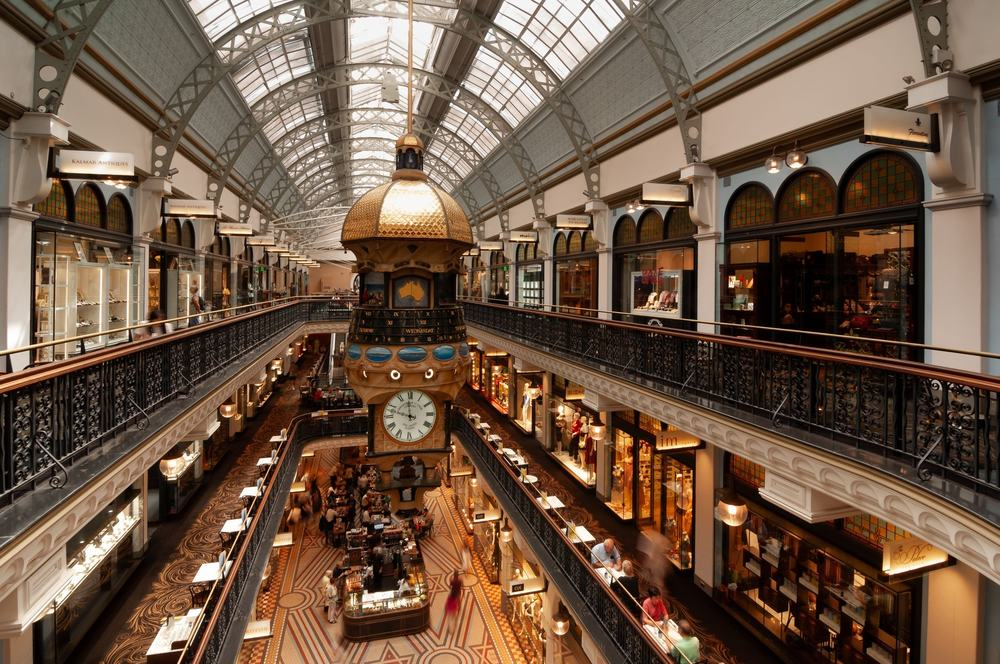
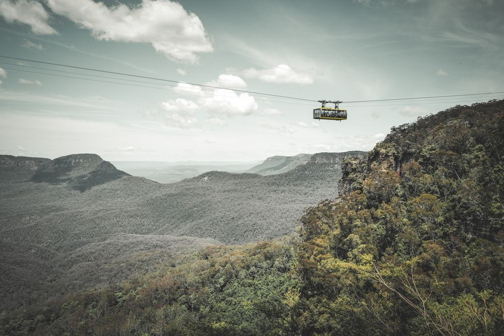

모두투어 시드니 패키지 여행 227만 9천원, 오페라하우스 안까지 들어가는 4박 6일

시드니 패키지를 고를 때 늘 걸리는 게 오페라하우스임. 대부분 밖에서 사진 찍고 지나감. 멀리까지 가서 겉만 보고 오면 아쉬움이 큼.
그러다 모두투어 상품 원문을 끝까지 읽어 봄. 오페라하우스 내부 가이드투어와 하버 디너 크루즈가 둘 다 들어 있고, 가이드·기사 경비도 상품가 안에 있음. 포트스테판 사막과 돌고래, 블루마운틴 시닉월드, 페더데일 동물원까지 4박 6일에 돎. 대신 호텔이 출발 3일 전에야 정해지고, 시내 밖 호텔이 많음.
결론 — 추천. 오페라하우스 안, 디너 크루즈, 시닉월드 4종, 가이드 경비까지 한 값에 든 일정임. 다만 밤에 숙소 앞 시내를 걷고 싶은 분, 쇼핑 들르는 시간이 싫은 분, 하루 왕복 6시간 버스가 힘든 분은 아님.
227만 9천원이 어디에 들어갔는지, 현지에서 더 내는 돈은 얼마인지 하나씩 뜯어봤음.
| 항목 | 내용 |
|---|---|
| 가격 | 1인 2,279,000원 (성인 · 11월 출발 기준) · 2인 4,558,000원 |
| 여행사 | 모두투어 |
| 항공 | 아시아나항공 직항 · 인천 밤 출발 → 시드니 아침 도착 / 시드니 오전 출발 → 인천 저녁 도착 (편도 약 10시간 30분) |
| 숙소 | 예정 호텔 19곳 중 배정 (출발 3일 전 확정 · 2인 1실) |
| 일정 | 4박 6일 · 버스 · 한국어 가이드 · 식사 11회 · 쇼핑 3회 · 선택관광 없음 |
| 가는 곳 | 포트스테판 사막·돌핀 크루즈 · 머레이스 와이너리 · 본다이 비치 · 시드니 타워 · 세인트 메리 대성당 · 퀸 빅토리아 빌딩 · 디너 크루즈 · 페더데일 동물원 · 블루마운틴 시닉월드 · 오페라하우스 내부 · 하버브릿지 · 시드니 대학교 · 달링하버 · 바랑가루 · 시드니 천문대 |
▶ 내 출발일 오늘 기준 요금 확인 (제휴 링크 · 예약 시 수수료를 받으며 가격은 같습니다)
▶ 10월 20일 기준 시드니 패키지 최저 134만 9천원부터 — 출발일별 값 한 화면에: 비교 페이지
| 순서 | 다루는 것 | 한 줄 결론 |
|---|---|---|
| 1 | 구성 뜯어보기 | 가이드 경비 포함, 선택관광 없음, 쇼핑 3회 |
| 2 | 일정 살펴보기 | 2일차가 가장 긴 날, 3일차 밤은 디너 크루즈 |
| 3 | 자유여행 VS 패키지 | 직접 짜면 약 248만원 | 항공권만 1인 96만 8천원 |
1. 구성 뜯어보기
요약 — 아시아나 직항 왕복·호텔 4박·식사 11회·관광지 입장료·한국어 가이드·버스·최대 1억원 여행자보험이 들어 있음. 가이드·기사 경비(USD 60)도 포함이라 현지에서 반드시 더 내는 돈은 호주 ETA 비자뿐임.
1-1. 227만 9천원에 들어 있는 것

포함 항목을 정리하면 이럼.
- 아시아나항공 인천–시드니 직항 왕복 + 유류할증료·세금
- 호텔 4박 (2인 1실 · 예정 호텔 19곳 중 배정)
- 식사 11회 (특식 다수 · 한식 1 · 뷔페 1 · 디너 크루즈 3코스)
- 일정표 관광지 입장료 · 한국어 가이드 · 버스 · 최대 1억원 여행자보험
- 가이드·기사 경비 (USD 60)
- 귀국일 시드니 공항 라운지 이용권
관광은 이렇게 들어 있음.
- 포트스테판 4WD 사막투어·모래썰매 · 머레이스 와이너리(시음) · 돌핀 크루즈
- 본다이 비치·동부해안 · 시드니 타워 · 오스트레일리안 뮤지엄
시내와 산 쪽은 이렇게 이어짐.
- 하이드 파크 · 세인트 메리 대성당 · 퀸 빅토리아 빌딩 · 디너 크루즈
- 페더데일 동물원 · 블루마운틴 시닉월드 4종(스카이웨이·케이블웨이·레일웨이·워크웨이) · 카툼바 폭포 · 로라 빌리지
- 오페라하우스 내부 가이드투어 · 하버브릿지 · 시드니 대학교 · 달링하버 · 바랑가루 · 시드니 천문대
선택관광 목록이 아예 없음. 현지에서 옵션 값을 따로 낼 일이 없는 구성임. 상품명에 「노팁/노옵션」이 붙어 있지만 쇼핑은 3회 있음.
출발일별 요금 확인하기
https://naver.me/xtNJavJl
1-2. 호텔 네 밤

호텔은 미리 정해져 있지 않음. 노보텔, 머큐어, 홀리데이 인, 목시 같은 체인 호텔 19곳이 후보이고, 출발 3일 전 확정 일정표로 알려 줌. 아침은 매일 호텔 조식임.
걸리는 점은 위치임. 후보 상당수가 공항 근처나 파라마타·뱅스타운처럼 시내 밖이라, 밤에 숙소에서 하버까지 걸어 나가긴 어려움. 밤 하버는 3일차 디너 크루즈에서 보는 구성이라, 야경을 아예 못 보는 건 아님.
1-3. 현장에서 더 낼 돈
| 항목 | 금액 | 비고 |
|---|---|---|
| 가이드·기사 경비 | 0원 | 상품가에 포함 (USD 60) |
| 선택관광 | 0원 | 목록 없음 |
| 호주 ETA 전자비자 | AUD 40 (약 3만 7천원) | 1인 AUD 20 × 2 · 본인이 앱으로 직접 신청 · 환율 10/19 기준 |
| 식사 때 음료 | 개인 | 불포함 |
| 합계 (2인) | 약 3만 7천원 (반드시 내는 돈) | 상품가 455만 8천원 + ETA 비자 = 약 460만원, 음료만 개인 |
두 사람이면 상품가 455만 8천원에 ETA 비자 두 사람 몫(약 3만 7천원)만 더 들어 약 460만원임. 쇼핑에서 사는 건 자유임.
1절 자주 나오는 질문
Q. 시드니 패키지 쇼핑은 몇 번 들르나요?
A. 3회임. 건강보조식품, 잡화, 양모·이불 매장에 들르고, 원문 안내로 회당 약 60~80분임. 구매는 자유이고 환불 규정이 있음.
Q. 시드니 패키지 노쇼핑인가요?
A. 아님. 상품명에 「노팁/노옵션」이 있지만 쇼핑 3회가 들어 있음. 노옵션은 맞음 — 선택관광 목록이 없음.
Q. 가이드 경비는 따로 내나요?
A. 안 냄. 현지 가이드·기사 경비 USD 60이 상품가에 들어 있음.
2. 일정 살펴보기
요약 — 2일차 포트스테판, 3일차 본다이·도심·디너 크루즈, 4일차 페더데일·블루마운틴, 5일차 오페라하우스 내부·하버, 6일차 오전 비행기로 귀국.
2-1. 하루하루 어디를 가나

| 일차 | 가는 곳 | 식사 | 숙소 |
|---|---|---|---|
| DAY 1 | 인천 제2터미널 밤 출발 (아시아나 직항) | 석 기내식 | 기내 |
| DAY 2 | 시드니 아침 도착 → 포트스테판 4WD 사막투어·모래썰매 → 머레이스 와이너리 → 돌핀 크루즈 → 시드니 | 중 특식(피쉬앤칩스 또는 스테이크) · 석 한식 | 예정 호텔 |
| DAY 3 | 본다이 비치·동부해안 → 시드니 타워 → 오스트레일리안 뮤지엄 → 하이드 파크·세인트 메리 대성당 → 퀸 빅토리아 빌딩 → 디너 크루즈 | 조 호텔식 · 중 스테이크 · 석 크루즈 3코스 | 예정 호텔 |
| DAY 4 | 페더데일 동물원 → 블루마운틴 시닉월드 4종·카툼바 폭포 → 로라 빌리지 → 시드니 | 조 호텔식 · 중 호주식 버거 · 석 뷔페 | 예정 호텔 |
| DAY 5 | 오페라하우스 내부 가이드투어 → 하버브릿지 → 시드니 대학교 → 달링하버 → 바랑가루 → 시드니 천문대 | 조 호텔식 · 중 치킨슈니첼 또는 피쉬앤칩스 · 석 일정표 미정 | 예정 호텔 |
| DAY 6 | 시드니 오전 출발 → 인천 저녁 도착 | — | — |
| 일차 | 버스 이동 | 걷기 | 포함 식사 |
|---|---|---|---|
| DAY 1 | 거의 없음 | 적음 | 석 기내식 |
| DAY 2 | 약 6시간 | 보통 | 조 기내식 · 중 특별식 · 석 한식 |
| DAY 3 | 약 1.5시간 | 보통 | 조 호텔식 · 중 특별식 · 석 특별식 |
| DAY 4 | 약 3.5시간 | 중상 | 조 호텔식 · 중 특별식 · 석 뷔페식 |
| DAY 5 | 약 1.5시간 | 보통 | 조 호텔식 · 중 특별식 · 석 미정/기타 |
| DAY 6 | 약 0.5시간 | 적음 | 포함 끼니 없음 |
| 합계 | 약 13시간 | - | 13끼 (현지식 9 · 호텔식 3 · 한식 1) |
요약 — 버스 이동은 6일 동안 약 13시간임. 표의 13끼는 기내식 2끼를 함께 센 숫자이고, 상품 표기는 식사 11회임. 가장 많이 걷는 날은 블루마운틴 숲길을 걷는 DAY 4임.
2-2. 2일차 — 가장 긴 날, 사막과 돌고래

아침에 시드니에 내리면 바로 포트스테판으로 감. 원문 안내로 약 3시간 거리임. 사륜구동 차로 모래언덕에 올라가 모래썰매를 타고, 머레이스 와이너리에서 와인을 시음함. 오후엔 돌핀 크루즈로 만에 나가 야생 돌고래를 봄.
밤 비행기로 도착한 날 바로 버스를 오래 타는 일정이라, 기내에서 잠을 챙겨 두는 게 좋음. 저녁은 시드니로 돌아와 한식임.
2-3. 3일차·5일차 — 디너 크루즈와 오페라하우스 안

3일차는 본다이 비치에서 시작해 도심을 돌고, 해가 지면 디너 크루즈에서 3코스 저녁을 먹음. 불 켜진 오페라하우스와 하버브릿지를 물 위에서 보는 시간임.
5일차는 오페라하우스 내부 가이드투어로 시작함. 이어서 하버브릿지, 시드니 대학교, 달링하버를 돌고 바랑가루에서 자유시간을 가짐. 이날 저녁은 일정표에 「미정/기타」로 적혀 있어서, 예약할 때 확인해 두는 게 좋음.
2절 자주 나오는 질문
Q. 시드니 패키지여행 아시아나 직항이면 몇 시간 걸리나요?
A. 편도 약 10시간 30분임. 인천에서 밤에 떠나 시드니에 아침에 도착하고, 귀국은 시드니 오전 출발·인천 저녁 도착임. 원문에 항공 스케줄 변경 안내가 있어 정확한 시각은 예약 때 확인해야 함.
Q. 블루마운틴은 많이 걷나요?
A. 4일차가 가장 많이 걷는 날임. 시닉월드 케이블카와 궤도열차로 오르내리고, 숲길을 걸어 카툼바 폭포까지 감. 무릎이 불편하신 분은 걷는 구간 전에 가이드에게 미리 말해 두면 좋음.
Q. 인솔자가 같이 가나요?
A. 인솔자는 불포함임. 현지 한국어 가이드가 진행하고, 원문 안내로 성인 8명 이하면 가이드가 직접 운전하는 드라이빙 가이드로 진행함.
3. 자유여행 VS 패키지 | 직접 짜면 약 248만원
요약 — 같은 일정을 직접 짜면 1인 약 248만원쯤 듦. 항공권만 1인 96만 8천원임. 패키지는 가이드 경비까지 227만 9천원이라 패키지가 덜 듦.
3-1. 같은 일정을 직접 짜면

같은 일정을 혼자 짠다고 치고 항목별로 계산해 봄. 11월 출발, 2인 1실 1인분임. 항공 말고는 추정치라 근거 열에 적어 둠.
| 항목 | 금액 | 근거 |
|---|---|---|
| 인천–시드니 왕복 항공 | 968,000원 | ICN↔SYD 직항 왕복 1인 96만 8천원 (패키지와 같은 11월 출발일 · 2026-10-20 마이리얼트립 조회) |
| 호텔 4박 | 500,000원 | 체인 호텔 2인 1실 1인분 (추정) |
| 투어·입장 (포트스테판·블루마운틴·오페라하우스 내부·디너 크루즈·타워) | 700,000원 | 근교 당일 투어 2회 + 입장권 (추정) |
| 식사 (9회) | 250,000원 | 현지 식당 기준 (추정) |
| 공항 이동 | 30,000원 | 공항↔시내 왕복 (추정) |
| 여행자보험 · 유심 | 30,000원 | 6일 기준 (추정) |
| 가이드 | — | 자유여행은 없음 |
| 합계 | 약 2,478,000원 |
직접 짜실 분은 이 날짜 항공권부터 보세요 — https://myrealt.rip/xPW020 (마이리얼트립 제휴 링크)
3-2. 그래서 뭐가 다른가
포트스테판은 북쪽으로 약 3시간, 블루마운틴은 서쪽으로 약 1시간 30분이라 직접 가면 이동이 가장 번거로움.
- 포트스테판 사막·돌고래는 차가 없으면 당일 투어를 따로 사야 함
- 오페라하우스 내부 투어·디너 크루즈는 각각 따로 예약해야 함
- 블루마운틴 시닉월드 4종도 입장권을 따로 사야 함
패키지는 이 전부가 버스 한 대로 이어지고, 한국어 가이드가 붙음. 자유여행 계산표에 가이드 행이 비어 있는 게 그 뜻임 — 0원이 아니라 살 수 없는 것임.
3-3. 어느 쪽이 맞나
| 자유여행이 맞음 | 패키지가 맞음 |
|---|---|
| 시드니 시내 숙소에서 밤 산책하고 싶음 | 오페라하우스 안까지 제대로 보고 싶음 |
| 쇼핑 들르는 시간이 싫음 | 포트스테판·블루마운틴을 하루씩 몰아 보고 싶음 |
| 근교는 빼고 시내만 천천히 | 경비·옵션 걱정 없이 다니고 싶음 |
| 영어로 직접 예약하는 게 편함 | 부모님과 길 찾기 걱정 없이 돌고 싶음 |
3절 자주 나오는 질문
Q. 시드니 패키지 여행 경비는 패키지 말고 얼마나 더 드나요?
A. 반드시 더 드는 건 호주 ETA 비자 1인 AUD 20뿐임. 가이드 경비는 포함이고 선택관광은 없음. 음료와 쇼핑은 개인임.
Q. 호주 ETA 비자는 어떻게 받나요?
A. 원문 안내로 AustralianETA 앱에서 본인이 직접 신청함. 발급비 AUD 20, 발급일로부터 1년 유효, 여권 유효기간 6개월 이상이 필요함. 여행사 대행은 없음.
Q. 자유여행이 더 싸지 않나요?
A. 이 일정은 반대임. 계산해 보면 자유여행이 약 248만원, 패키지가 가이드 경비까지 227만 9천원임.
마무리
정리하면 이럼.
추천함. 227만 9천원에 아시아나 직항, 호텔 네 밤, 식사 11회, 오페라하우스 내부 가이드투어와 디너 크루즈, 블루마운틴 시닉월드 4종, 포트스테판 사막·돌고래, 가이드·기사 경비까지 들어 있음. 선택관광이 없어 현지에서 반드시 더 내는 돈은 ETA 비자뿐임.
이런 분은 고르면 안 됨. 밤에 숙소 앞 시내를 혼자 걷고 싶은 분, 쇼핑 들르는 시간 자체가 싫은 분, 하루 왕복 6시간 버스가 힘든 분.
| 맞는 사람 | 안 맞는 사람 |
|---|---|
| 오페라하우스 안까지 보고 싶음 | 숙소 앞 시내 밤 산책이 꼭 필요함 |
| 블루마운틴·포트스테판을 몰아 보고 싶음 | 쇼핑 들르는 시간이 싫음 |
| 경비·옵션 걱정 없이 | 왕복 6시간 버스가 힘듦 |
걸리는 점이 있긴 한데 상품 흠이라기보다 맞는 사람과 안 맞는 사람을 가르는 조건에 가까움.
오늘 기준 출발일별 요금 보기
https://naver.me/xtNJavJl
같은 목적지 다른 여행사 패키지, 쇼핑·선택관광·가이드 경비까지 비교
https://pkg-lab.com/go/?q=%EC%8B%9C%EB%93%9C%EB%8B%88&utm_source=blog&utm_medium=post&utm_campaign=daily
함께 보면 좋은 글
하나투어 대구출발 후쿠오카 패키지 여행 59만원대, 가이드 경비 포함인데 추가금 진짜 없을까
https://blog.naver.com/robotnady10/224446148256
노랑풍선 푸꾸옥 패키지 여행 62만원대, 해상 케이블카·호핑·마사지 90분까지? 현지에서 더 내는 돈
https://blog.naver.com/robotnady10/224445235909
이 글에는 네이버·마이리얼트립 제휴 링크가 포함되어 있으며, 링크를 통해 예약하시면 일정 수수료를 받습니다. 가격은 동일합니다. 가격과 구성은 2026년 10월 20일 확인 기준이며 출발일에 따라 달라질 수 있습니다.
▶ 이 상품, 영상으로 보기 (유튜브)
▶ 시드니 패키지 오늘 값 나란히 비교
▶ 같은 목적지 다른 여행사 패키지, 쇼핑·선택관광·가이드 경비까지 비교: pkg-lab.com
사진 출처 (저작자 · 라이선스):
그 밖의 사진: Pexels
쇼츠·클립 영상과 사진:
The Three Sisters | Katoomba | Blue Mountains | NS — Little clips of the world (YouTube, CC BY) 원본
Scenic Railway POV, Scenic World Incline Railway | — Canobie Coaster (YouTube, CC BY) 원본
Explore Queen Victoria Building - QVB | Sydney Aus — A Picturesque View (YouTube, CC BY) 원본
Pixabay 원본
Sydney’s Hidden Masterpiece! Discover the Magic of — The Holiday Hunter (YouTube, CC BY) 원본